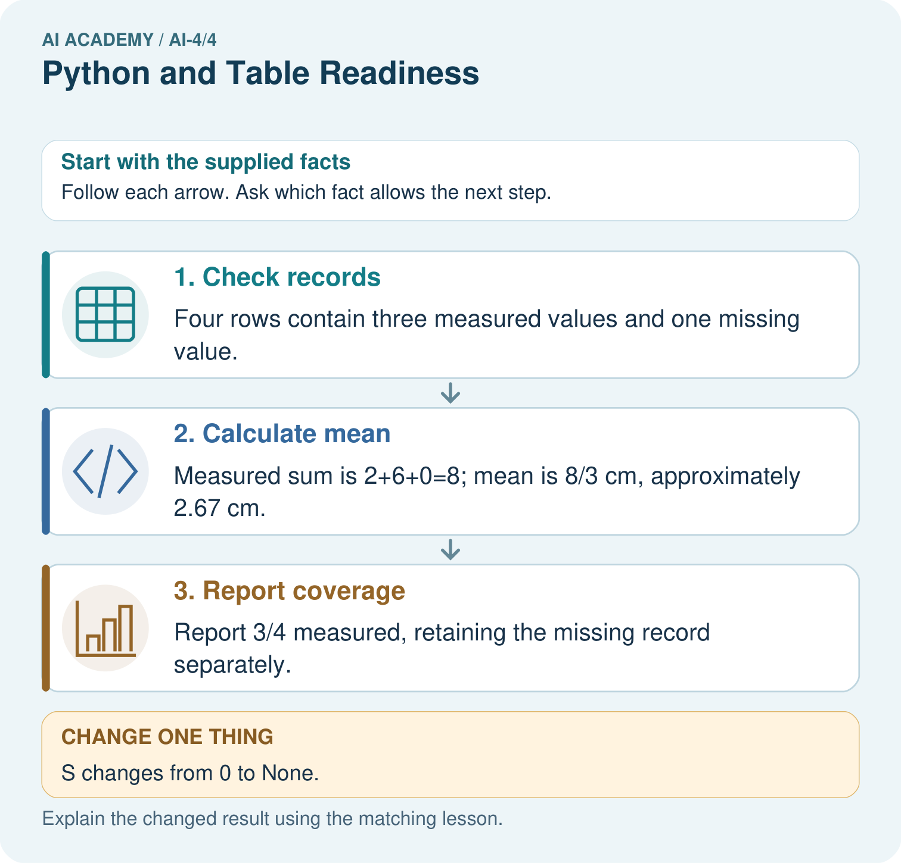
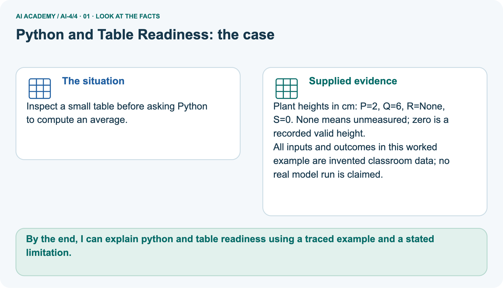
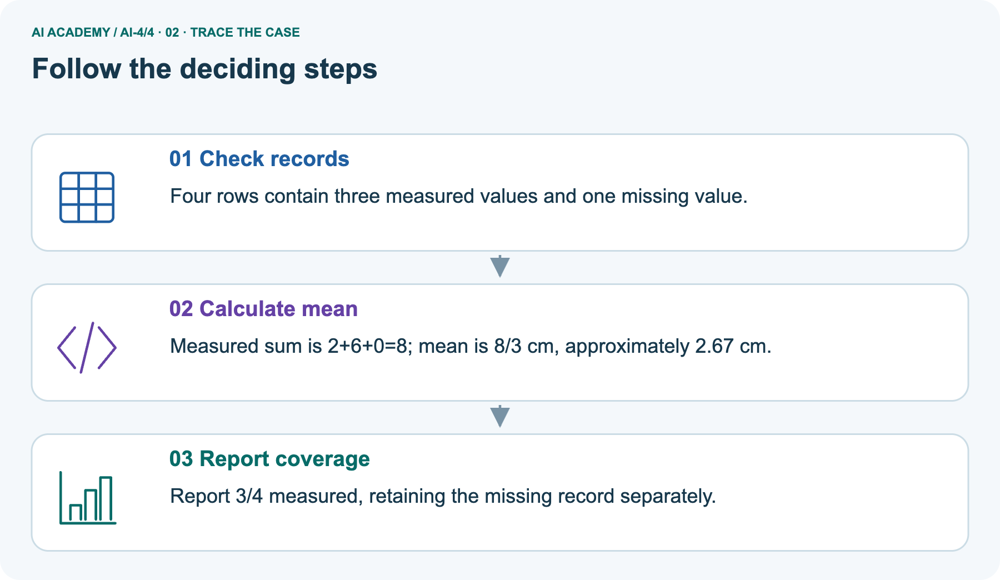
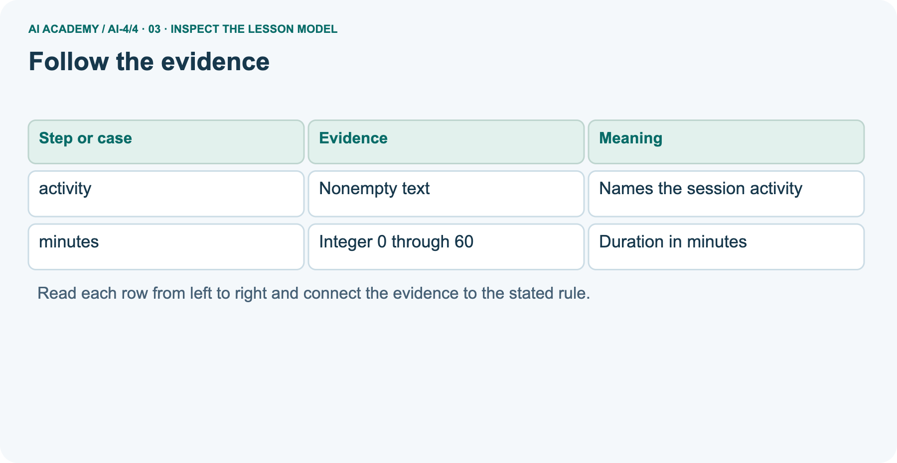
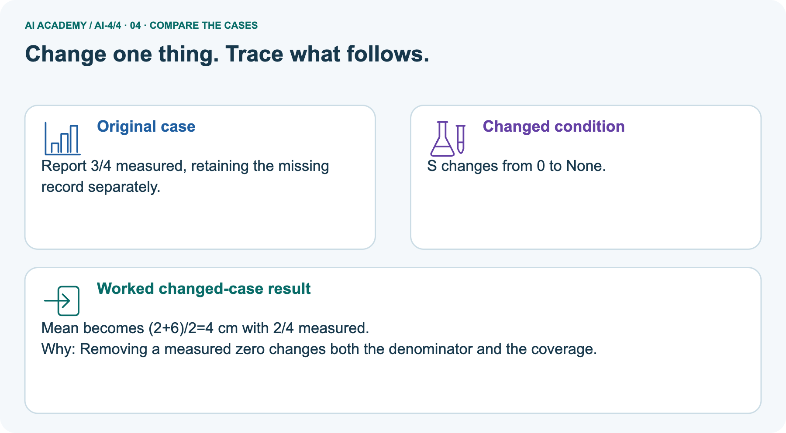
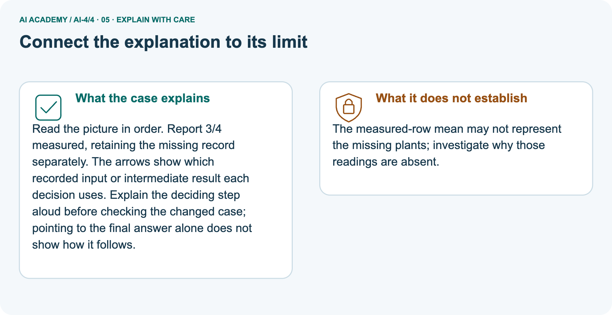
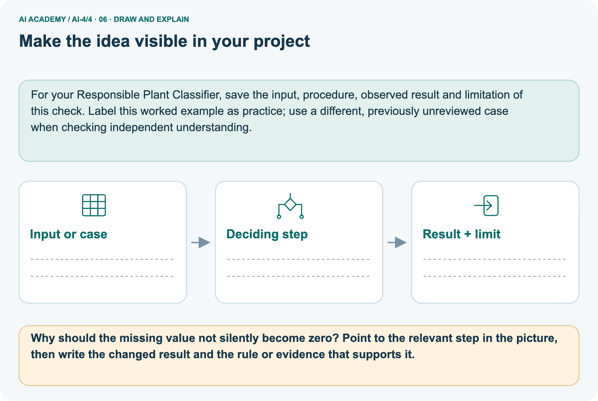

AI Academy · Level 4 · Grade 9 · Week 4 · Teacher guide
Python and Table Readiness
Learn to understand, design, build, test and explain AI systems responsibly.
Project: Responsible Plant Classifier
Teacher guide · 1 of 9
Python and Table Readiness
Prepare Python and Table Readiness: check the target, prerequisites, resources and adaptable teaching schedule.
Teach the learning cycle
Primary target: Specify a table schema
| Session | Sequence and minutes | Resources |
|---|---|---|
| Session 1 · Understand · 45 min | 0–7: recall and prerequisite; 7–15: inspect the concrete case and predict; 15–30: teacher models the worked trace; 30–40: learners explain a step using the text and visual; 40–45: check the core idea. | Sections 1–6; record the brief recall in the workbook. |
| Session 2 · Practise · 45 min | 0–5: retrieve the procedure; 5–15: W2 completion practice; 15–23: explain and check with a partner; 23–30: each learner answers the misconception check; 30–40: targeted reteaching or a harder variation; 40–45: prepare the investigation. | Sections 7–10; use the matching workbook W2 and misconception check. |
| Session 3 · Investigate and transfer · 45 min | 0–5: retrieve the decision rule; 5–20: investigate or trace; 20–30: start the independent case; 30–38: connect the project; 38–43: act on feedback; 43–45: plan the return check. | Sections 9 and 11–14. Give extra time to finish the full task set; use Section 15 when the week includes a coding lab. |
This is a starting allocation of 135 minutes, not a validated duration. Preserve all named topics. Schedule extra time for connected examples, the full investigation, independent cases and project building.
Repeated copies of a case share one recorded attempt; they are not new evidence.
Case exposure check: this source example appears in ai-2/7, ai-4/4. Reuse a familiar case for recall or modelling; verify that the case used to assess transfer has not already received feedback.
Retrieval answer guidance
Classification or Regression?
Without opening the old lesson, explain one key idea from Classification or Regression?. Give an example and a mistake that the idea helps you avoid.
Look for: Identify a task from the meaning of its target
Reference example, not the only acceptable wording: Route type is classification because 1 and 2 encode categories. Whole-minute duration is regression because numerical differences measure time.
Exceeding 10 minutes is binary classification because the target is yes or no.
The ML Lifecycle
Without opening the old lesson, explain one key idea from The ML Lifecycle. Give an example and a mistake that the idea helps you avoid.
Look for: Distinguish fitting a rule from applying a fixed rule
Reference example, not the only acceptable wording: The input is width x and the label is the observed category 0 or 1. Candidates are 2, 4 and 6.
Selection uses mistakes on the four training cards only; held out labels must not guide it.
Use the student module and workbook section with this exact week title. The worked case, independent question and answers below form one aligned lesson sequence.
What the learner must demonstrate
Trace mean for [4,8,12] using sum(values)/len(values). What should the program do for []? Explain why returning 0 silently is misleading.
Concept to explain
Python variables, types, expressions, rows, and columns give a reproducible representation of data and transformations.
| Term | Meaning |
|---|---|
| variable | name bound to a value |
| data type | kind of value and valid operations |
| dataframe | table represented in code |
| expression | code that computes a value |
Prepare the class
Use the supplied scenario, student illustrations and blank paper. For numeric work, offer counters or a calculator after learners show the setup. Fictional records are supplied; personal data and paid accounts are unnecessary.
Alternative compact allocation
This compact option is not the full-week schedule. Use the main teaching cycle and allow extra sessions for the investigation, independent work and project.
Allow 80 minutes: recall 8; explanation 12; worked demonstration 15; guided practice 20; independent assessment 15; project and reflection 10. Extend the lab into a second session when needed.
Preparation for the connected explanation
Teach Week 13 as a two-session investigation using fictional data. A fictional classroom logs the duration of each activity.
Before comparing durations, define a schema: activity is nonempty text, minutes is an integer from 0 through 60, and each row describes one activity session. These decisions make data interpretable.
Assess the three stated outcomes through the independent task, not by copying the worked result.
Readiness answer
Look up the value associated with the key "used" in that record.
Python 3 editor with a fresh local practice file
Paper trace table and the student workbook
Fictional input records from this lesson; no real student identifiers
Apply the connected idea: File input and output
Teach Week 25 as a two-session investigation using fictional data. Use a teacher-provided local sandbox folder, never a real personal file. Create durations.txt with two lines: 12 and 8.
The goal is to read the text, convert it to integers and report the total. Keep the original file unchanged for this activity. Assess the three stated outcomes through the independent task, not by copying the worked result.
Readiness answer
It is text; conversion and validation are needed.
Python 3 editor with a fresh local practice file
Paper trace table and the student workbook
Fictional input records from this lesson; no real student identifiers
Apply the connected idea: Exceptions and recovery
Teach Week 27 as a two-session investigation using fictional data. A small parser receives duration text. Its contract permits a string representing a nonnegative integer up to 60.
Invalid numeric text should return a clear status rather than crash or pretend that the duration was zero. Test both the successful and failing paths.
Assess the three stated outcomes through the independent task, not by copying the worked result.
Readiness answer
ValueError.
Python 3 editor with a fresh local practice file
Paper trace table and the student workbook
Fictional input records from this lesson; no real student identifiers
End goal for the pictorial case
By the end, I can explain python and table readiness using a traced example and a stated limitation.
This added worked case illustrates the week’s main idea. Retain all original and connected topics; schedule its practice within the teaching cycle.
Teacher guide · 2 of 9
Explain the mechanism
Model Python and Table Readiness using the supplied case, labelled mechanism and reasoning. Make the scope of each conclusion explicit.
Trace the information, fitted behavior, and evaluation proof separately.
Question to explain
QUESTION Trace a short notebook state and repair two type or missing-field errors.
MODEL IDEA Python variables, types, expressions, rows, and columns give a reproducible representation of data and transformations.
PROOF NEEDED Use an unseen case, visible calculation, error analysis, and a stated limitation.
How the mechanism works
UNDER THE HOOD widths = [4.2, 5.0, 6.1] stores three decimal measurements. mean_width = sum(widths) / len(widths) evaluates to 5.1.
Draw a fresh data → model → prediction → evaluation trace:
Predict first. Then check each step. A correct answer without visible evidence cannot be audited.
Step 1
STEP 1 widths = [4.2, 5.0, 6.1] stores three decimal measurements.
Step 2
STEP 2 mean_width = sum(widths) / len(widths) evaluates to 5.1.
Step 3
STEP 3 Adding 'unknown' to the numeric list causes a type problem.
Step 4
STEP 4 Clean or explicitly encode values, rerun top to bottom, and record the result.
CHECK Verify the denominator, unit, split, class definition, and data version before interpreting a score.
Recalculate, retrace, or restate the evidence independently:
Concrete teaching case
The teaching case
Python lengths=[4,6,8]; total=sum(lengths); mean=total/len(lengths).
The teaching case
Trace and handle an empty list.
Exact explanation to model
Why the result follows
Total=18, count=3, mean=6.0. Guard the empty case against division by zero; no mean exists without observations.
Explain the added worked example
A fictional classroom logs the duration of each activity. Before comparing durations, define a schema: activity is nonempty text, minutes is an integer from 0 through 60, and each row describes one activity session.
These decisions make data interpretable.
Explain the added worked example · 1
The worked script prints True twice. type(value) is int checks the exact type here and avoids accepting a Boolean as a count. The chained comparison checks both boundaries.
The example assumes both keys exist; next week handles missing fields. A zero duration is allowed by this written schema.
Key terms
| Term | Meaning |
|---|---|
| Schema | Rules for the fields and values in records |
| Type | A category such as integer or text |
| Unit | The quantity scale attached to a number |
| Constraint | A rule a valid record must satisfy |
Apply the connected idea: File input and output
Use a teacher-provided local sandbox folder, never a real personal file. Create durations.txt with two lines: 12 and 8. The goal is to read the text, convert it to integers and report the total.
Keep the original file unchanged for this activity.
Apply the connected idea: File input and output · 2
The mode r means read. with closes the file when the block finishes, including when an error occurs. splitlines separates lines without retaining newline characters.
This example assumes each line is a valid integer text; an empty line or twelve raises ValueError during int conversion.
Values [0, 3, 7], total 10. Exit: It is a parse failure, not a measured zero. Flag the line and report the problem; silently substituting changes the evidence.
Apply the connected idea: Exceptions and recovery
A small parser receives duration text. Its contract permits a string representing a nonnegative integer up to 60. Invalid numeric text should return a clear status rather than crash or pretend that the duration was zero.
Test both the successful and failing paths.
Apply the connected idea: Exceptions and recovery · 3
try covers the operation expected to fail; except ValueError handles that known conversion failure. Returning early ends the failing path. This contract expects a string: it does not claim to handle every possible object.
Spaces around an integer are accepted by int, and that behavior should be documented.
out of range/None, ok/5, invalid text/None. Exit: Accepted count 8, rejected count 2 and reasons; summaries apply to accepted data. Preserve raw input for authorized correction.
Model the reasoning aloud
Use the complete worked example below before asking learners to complete W2. Reveal a small part, invite a prediction, then explain the deciding step.
These teacher notes contain solutions; do not reveal the independent case answer during modelling.
| Thinking move | Teacher prompt |
|---|---|
| Plan | What is given? What is the question? Which procedure fits these facts? |
| Do | Point to each input and intermediate step in the worked trace. Name the rule that allows the next step. |
| Check | Does the output answer the question? Which assumption or limitation prevents a larger claim? |
Use the diagram and verbal explanation together. Ask learners to match a sentence to a specific visual step; do not assign learners fixed visual or auditory learning styles.
A pictorial worked case: Python and Table Readiness
Inspect a small table before asking Python to compute an average.
The facts we will use
Supplied facts
Plant heights in cm: P=2, Q=6, R=None, S=0. None means unmeasured; zero is a recorded valid height.
Supplied facts
All inputs and outcomes in this worked example are invented classroom data; no real model run is claimed.

Read the picture one step at a time
Why this result follows
Why the result follows
Read the picture in order. Report 3/4 measured, retaining the missing record separately. The arrows show which recorded input or intermediate result each decision uses.
Explain the deciding step aloud before checking the changed case; pointing to the final answer alone does not show how it follows.
What this example does not establish
Keep the stated limit
The measured-row mean may not represent the missing plants; investigate why those readings are absent.
Change one thing in the pictured case
Change one thing
Change: S changes from 0 to None.
Predicted result
Prediction: Mean becomes (2+6)/2=4 cm with 2/4 measured.
Why the result follows
Reason: Removing a measured zero changes both the denominator and the coverage.
Ask while showing the picture
Ask while showing the picture · 4
Cover the result. Ask learners to name the inputs and predict the next step. Uncover one step, connect the icon to the actual procedure, and explain its evidence. Then change the supplied condition and compare.
The picture is a representation; it does not document execution of a real AI model.
Teacher guide · 3 of 9
Demonstrate and guide practice
Demonstrate Python and Table Readiness, reduce support deliberately and check individual reasoning before discussing answers.
Board sequence
1. Put the facts on the board
Write the given facts: Python lengths=[4,6,8]; total=sum(lengths); mean=total/len(lengths).
2. State the decision to explain
Write the question to explain: Trace and handle an empty list.
3. Reveal the worked reasoning
Reveal after predictions: Total=18, count=3, mean=6.0. Guard the empty case against division by zero; no mean exists without observations.
Hold back the independent task
Keep for an independent attempt: Trace Python: lengths = [4, 7, 9]; selected = lengths[1]; total = selected + 3. Give selected and total.
Classroom dialogue
Ask the class
Ask: Which facts are given, and which would we have to assume? Learners mark relevant details before discussing answers.
Language to model
Say: Predict first. Show the rule, information path or calculation that would produce the result. A correct guess is not yet an explanation.
Reveal reasoning one step at a time. Explain why a tempting alternative fails. Write units and denominators for arithmetic, trace conditions for decisions, and identify supporting sources for claims.
In pairs, one learner solves while the other checks evidence; exchange roles. Remove the worked answer before independent assessment.
Model these guided questions
61 fails the range; "12" fails the integer type; 12 passes. Exit: No. The value has a permitted structure but still needs trustworthy collection evidence.
Case-specific teaching sequence
| Stage | Teacher action |
|---|---|
| Session 1 start to 7 minutes | Retrieve the prerequisite and explain the purpose in the opening section. |
| 7 to 20 minutes | Read the worked example and diagram; ask learners to trace each step aloud. |
| 20 to 33 minutes | Complete W1 and W2, then compare predictions with observed results. |
| 33 to 45 minutes | Collect the guided prediction before running; discuss a mismatch and its cause. |
| Session 2 start to 8 minutes | Retrieve the main rule without showing the previous answer. |
| 8 to 20 minutes | Use W3 to diagnose and repair the stated failure; rerun an earlier case. |
| 20 to 35 minutes | Collect W4 independently, including code or plan, predictions and explanations, before hints. |
| 35 to 45 minutes | Discuss W5 and the exit; use the fresh retry when support was needed. |
Teach the connected idea
| Stage | Teacher action |
|---|---|
| Session 1 start to 7 minutes | Retrieve the prerequisite and explain the purpose in the opening section. |
| 7 to 20 minutes | Read the worked example and diagram; ask learners to trace each step aloud. |
| 20 to 33 minutes | Complete W1 and W2, then compare predictions with observed results. |
| 33 to 45 minutes | Collect the guided prediction before running; discuss a mismatch and its cause. |
| Session 2 start to 8 minutes | Retrieve the main rule without showing the previous answer. |
| 8 to 20 minutes | Use W3 to diagnose and repair the stated failure; rerun an earlier case. |
| 20 to 35 minutes | Collect W4 independently, including code or plan, predictions and explanations, before hints. |
| 35 to 45 minutes | Discuss W5 and the exit; use the fresh retry when support was needed. |
Teach the connected idea
| Stage | Teacher action |
|---|---|
| Session 1 start to 7 minutes | Retrieve the prerequisite and explain the purpose in the opening section. |
| 7 to 20 minutes | Read the worked example and diagram; ask learners to trace each step aloud. |
| 20 to 33 minutes | Complete W1 and W2, then compare predictions with observed results. |
| 33 to 45 minutes | Collect the guided prediction before running; discuss a mismatch and its cause. |
| Session 2 start to 8 minutes | Retrieve the main rule without showing the previous answer. |
| 8 to 20 minutes | Use W3 to diagnose and repair the stated failure; rerun an earlier case. |
| 20 to 35 minutes | Collect W4 independently, including code or plan, predictions and explanations, before hints. |
| 35 to 45 minutes | Discuss W5 and the exit; use the fresh retry when support was needed. |
Reduce help deliberately
Completion practice
Completion task: Classify minutes values 0, 60, -1 and 61 under this schema.
Reasoning to listen for
Teacher check: 0 and 60 pass; -1 and 61 fail.
Start by identifying the given inputs together. Leave the intermediate steps blank. If needed, model one step, then withdraw that help on the next step. Move to a full trace only when the partial trace is understood.
For partners, alternate explainer and checker; collect a response from every learner before discussion.
Individual reasoning check
Use the worked case for Rows columns and schemas. Proposed explanation: “A successful run proves the conclusion”. Decide whether this explanation is supported.
Point to the step or supplied fact that decides; explain your repair if needed.
Expected repair
Expected correction: A row can satisfy every schema rule and still be a wrong observation.
Schema validation checks our stated structure and constraints, not whether someone measured honestly or selected a representative sample.
Collect explanations, not only yes/no votes. If a misunderstanding is common, re-model the relevant step for the class.
If it affects a few learners, give a short targeted group explanation while others solve a more demanding variation.
Connected teaching cycle: File input and output
Target: Read a small local data file
Reserve further sessions for this topic; the 135-minute primary plan does not absorb all added content.
Completion practice: A sandbox file has lines 5, 0 and 2. What total does the worked reader print?
Reasoning to listen for
Teacher check: The parsed values sum to 5 + 0 + 2 = 7.
Individual check: For File input and output, use its worked case to evaluate this proposed explanation: “A successful run proves the conclusion”. Explain the deciding step.
Expected repair
Expected correction: File reading does not establish that the values are valid durations. After conversion, apply the schema and record any rejected lines. Do not upload personal records to an external tool for this exercise.
Apply the same support, independent transfer and delayed-review decisions to the named connected-topic workbook tasks.
Connected teaching cycle: Exceptions and recovery
Target: Handle expected exceptions specifically
Reserve further sessions for this topic; the 135-minute primary plan does not absorb all added content.
Completion practice: Compare parse_minutes("abc") and parse_minutes("70").
Reasoning to listen for
Teacher check: abc gives invalid text/None; 70 gives out of range/None. Both fail but for different reasons.
Individual check: For Exceptions and recovery, use its worked case to evaluate this proposed explanation: “A successful run proves the conclusion”. Explain the deciding step.
Expected repair
Expected correction: Recovery must fit the task. A caller may ask for corrected input or exclude the row with a recorded reason. It must not use None as a number or claim that rejected records were successfully processed.
Apply the same support, independent transfer and delayed-review decisions to the named connected-topic workbook tasks.
Pictorial practice question
Why should the missing value not silently become zero? Point to the relevant step in the picture, then write the changed result and the rule or evidence that supports it.
Reasoned teacher answer
Zero is a real recorded measurement here. Replacing missing with zero would invent evidence and lower the mean without justification. Changed-case check: Mean becomes (2+6)/2=4 cm with 2/4 measured.
Removing a measured zero changes both the denominator and the coverage.
Changed-case reasoning: Mean becomes (2+6)/2=4 cm with 2/4 measured. Removing a measured zero changes both the denominator and the coverage.
Collect each learner’s explanation before discussion. Use the first missing connection between input, deciding step and result to choose support. This question is worked-case practice, not fresh mastery evidence.
Teacher guide · 4 of 9
Run the weekly evidence lab
Run the Python and Table Readiness investigation and use the first unsupported step to choose a teaching response.
Keep the test conditions fixed, record every result, and change only one planned factor.
1. Write the hypothesis and expected evidence before running.
2. Notebook Detective: predict five variable values, trace two table filters, repair two errors, and rerun from a clean state.
3. Run one normal, one boundary, one missing, and one shifted case.
4. Calculate the metric from raw counts or row-level errors.
5. Interpret what changed, what did not, and what remains unsafe or unknown.
Make the lab runnable
Use the concrete case as the shared normal case and the independent question as a second case. Each pair creates a boundary or missing-information case and predicts its result before testing.
Keep the expected result separate from an observed mistake.
| Record | What to capture |
|---|---|
| Input or evidence | Exact data, instruction or claim |
| Expected result | Answer or safe fallback declared before the run |
| Observed result | Actual result, including errors |
| Explanation | Rule, calculation or evidence explaining the outcome |
| Next test | One justified change and a new prediction |
Diagnose and reteach
MISCONCEPTION TO REPAIR If notebook cells eventually run, execution order and data types do not matter.
For guessing, return to given facts and request a trace. For vocabulary without application, use one example and one non-example. For arithmetic errors, check the setup before the calculation.
Finish with a different uncoached case before recording mastery.
Address these additional misconceptions
A successful run proves the conclusion: A row can satisfy every schema rule and still be a wrong observation.
Schema validation checks our stated structure and constraints, not whether someone measured honestly or selected a representative sample.
Matching the example is enough: Require the new W4 case, explicit predictions and an explanation. Fresh retry: define a tray label and integer count 0 through 20. Require tests at 0, 20, -1 and 21 and a text count.
A convenient shortcut preserves meaning: If one row records 120 seconds in the minutes field, a simple numeric total becomes misleading.
Correct the source or explicitly convert and document it; renaming a column alone does not convert values.
Check these misconceptions
A successful run proves the conclusion: File reading does not establish that the values are valid durations. After conversion, apply the schema and record any rejected lines.
Do not upload personal records to an external tool for this exercise.
Matching the example is enough: Require the new W4 case, explicit predictions and an explanation. Fresh retry: sandbox values 2, 7, 1, 0 give count 4 and total 10.
An empty file yields count 0 and sum 0, which must be labelled no observations.
A convenient shortcut preserves meaning: If Python cannot find durations.txt, it raises FileNotFoundError. Check the current working folder and exact filename.
Do not switch to write mode to solve a missing input: opening an existing file with w would replace its contents.
Check these misconceptions
A successful run proves the conclusion: Recovery must fit the task. A caller may ask for corrected input or exclude the row with a recorded reason.
It must not use None as a number or claim that rejected records were successfully processed.
Matching the example is enough: Require the new W4 case, explicit predictions and an explanation. Fresh retry: integer score strings 0 through 5. "5" ok/5, "6" out of range/None, "" invalid text/None, "0" ok/0.
A convenient shortcut preserves meaning: A bare except that returns 0 hides unrelated programming errors and corrupts missing values. Catch the expected exception, preserve an error status and keep the unknown value as None.
If file reading is added, handle FileNotFoundError separately with an actionable message.
Match the support to the first error
| What the response shows | Next teaching action |
|---|---|
| Missing or misread facts | Read the case aloud, mark supplied versus unknown facts, and let the learner restate it. |
| Wrong procedure | Return to the deciding step in the worked case. Contrast it with the proposed incorrect explanation. |
| Arithmetic or implementation error | Trace intermediate values or lines; preserve the first mismatch and retry that step. |
| Correct result without a reason | Ask for a trace and a changed case before marking independent understanding. |
| An unsupported wider claim | Ask which supplied evidence supports the claim and which further observation would be needed. |
Offer an oral explanation, drawing, enlarged visual or fewer examples when that removes a reading/writing barrier. Keep the same reasoning goal.
Stretch secure learners by changing a boundary or assumption and asking them to defend the effect, not simply by assigning more of the same questions.
Teacher guide · 5 of 9
Assess and explain the answers
Use the Python and Table Readiness questions, teacher keys and criteria after the relevant attempts. Previously discussed cases are practice; protect the separately selected independent task.
Worked case answer
Teacher key · Worked case answer
Total=18, count=3, mean=6.0. Guard the empty case against division by zero; no mean exists without observations.
Independent question
Independent question · withhold the key
Trace Python: lengths = [4, 7, 9]; selected = lengths[1]; total = selected + 3. Give selected and total.
Expected independent answer
Teacher key · Expected independent answer
Python indexes this list from zero: lengths[1] is 7, so selected is 7 and total is 10.
What counts as evidence
| Criterion | 0 points | 1 point | 2 points |
|---|---|---|---|
| Result | Incorrect or absent | Partly correct | Correct with necessary conditions |
| Reasoning | No supporting trace | Some steps | Clear mechanism, calculation or source support |
| Limit | Overclaims certainty | Vague limitation | Relevant uncertainty or missing fact |
| Transfer | Copies without adapting | Adapts with prompts | Solves a changed case independently |
Use 6/8 as a classroom checkpoint, with 2 required for both Result and Reasoning. This is a proposed teaching rule, not a validated certification threshold.
Do not count a coached answer as independent mastery; correct unsafe or unsupported claims regardless of total.
Feedback
Ask the learner to find the evidence that challenges this claim: “Index 1 always selects the first list item.” Keep the first attempt and an uncoached retry separate.
Original transfer answer
Teacher key · Original transfer answer
Sum=24, count=3, mean=8.0. For [] the mean is undefined; explicitly report missing/insufficient data before division. Returning zero invents a measurement and can distort later predictions.
Test both populated and empty inputs.
Explanations for the additional workbook examples
W1 State a schema
Workbook question · W1
List the required fields, types and duration boundaries for the worked table.
Teacher reasoning · W1
activity: nonempty text; minutes: integer from 0 to 60 inclusive.
Teacher reasoning · W1
Check both fields. activity must exist as nonempty text. minutes must be an exact integer and satisfy 0 <= minutes <= 60. Inclusive means equality is accepted at both ends.
Structure, type and range are separate checks; passing them does not prove the duration was measured accurately.
W2 Classify records
Workbook question · W2
Classify minutes values 0, 60, -1 and 61 under this schema.
Teacher reasoning · W2
0 and 60 pass; -1 and 61 fail.
Teacher reasoning · W2
Apply the inclusive range to each integer. Both 0 and 60 are on allowed boundaries. -1 is below the minimum and 61 is above the maximum. Require the reason for each rejection, not only pass/fail labels.
W3 Repair a unit problem
Workbook question · W3
A source says 180 seconds but the row says minutes: 180. Give a documented correction.
Teacher reasoning · W3
Divide by 60 to record 3 minutes and retain the source value and conversion note.
W4 Design a schema independently
Workbook question · W4
For a fictional shelf audit, define label and book_count fields. Require a nonempty text label and an integer count from 0 to 40. Give two valid and two invalid records with reasons.
Teacher reasoning · W4
Examples: A/0 and B/40 valid; empty label/5 invalid label; C/41 invalid range. Text "5" also fails the count type. Accept alternatives meeting the written rules.
W5 Separate validity and truth
Workbook question · W5
A row says Reading, 12 and passes. Does that establish the session really lasted 12 minutes?
Teacher reasoning · W5
No. The value has a permitted structure but still needs trustworthy collection evidence.
File input and output — W1 Trace types
Before and after int("8"), identify the types and values.
Before: text "8". After: integer 8.
Before conversion, "8" is a string containing the character 8. int("8") returns the integer 8, which can participate in numeric arithmetic.
The conversion does not change the original file and does not establish that the number meets the duration schema.
File input and output — W2 Predict the total
A sandbox file has lines 5, 0 and 2. What total does the worked reader print?
The parsed values sum to 5 + 0 + 2 = 7.
File input and output — W3 Repair a path issue
The file is in the class-data folder but the script looks in its working folder. Give a safe repair.
Use the correct path to class-data/durations.txt or run from the intended folder. Keep read mode and do not overwrite the input.
File input and output — W4 Read independently
In a fresh sandbox file counters.txt put 4, 6 and 0 on separate lines. Adapt the reader, print the number of values and total. State the expected results.
Read counters.txt as UTF-8 text, convert three lines to integers; count 3 and total 10. Keep the raw file unchanged.
File input and output — W5 Handle malformed data
The file contains twelve on one line. Why should the program not silently turn it into zero?
It is a parse failure, not a measured zero. Flag the line and report the problem; silently substituting changes the evidence.
Exceptions and recovery — W1 Trace success
What does parse_minutes("0") return, and why is zero allowed?
A record with status ok and value 0; zero meets the inclusive range.
Exceptions and recovery — W2 Trace two failures
Compare parse_minutes("abc") and parse_minutes("70").
abc gives invalid text/None; 70 gives out of range/None. Both fail but for different reasons.
Exceptions and recovery — W3 Repair a handler
An except block returns 0 for any failure. State two problems and a repair.
It confuses failure with observed zero and may hide unrelated bugs. Catch ValueError, return an explicit status and None, then validate range.
Exceptions and recovery — W4 Build independently
Adapt the function for count strings representing integers 0 through 10. Test "4", "0", "11", "four" and "-1" and record status/value.
4 and 0 give ok with 4 and 0; 11 and -1 give out of range/None; four gives invalid text/None. Use specific handling and explicit range checks.
Exceptions and recovery — W5 Choose recovery
A batch has 8 valid and 2 invalid lines. What should its report include?
Accepted count 8, rejected count 2 and reasons; summaries apply to accepted data. Preserve raw input for authorized correction.
Assess independent transfer
Independent question · withhold the key
Selected case: Supplied values are3,7,14. Compute their mean. What should a function report for an empty list? How should it handle a missing fourth record?
Selected case answer
Teacher key · Selected case answer
Mean=(3+7+14)/3=8. An empty list has no observed mean; return an explicit unavailable result rather than divide by zero or invent0.
State the missing-value policy and report coverage3/4 separately if one of four records is missing.
| Dimension | Evidence required |
|---|---|
| Explanation | Names the applicable idea or procedure and ties it to the supplied facts. |
| Trace and result | Preserves the given inputs and shows the relevant intermediate steps; distinguishes a prediction from an observed execution. |
| Limits | States the assumptions, missing evidence or conditions under which the result would change. |
Teacher key · Selected case answer
Record each dimension as not yet, with support, or independent. Accept a valid alternative procedure with a defensible trace.
Do not penalise an honestly recorded model failure if the learner correctly explains its evidence and limits.
Feedback that the learner uses
Name the earliest unsupported step and give one action to repair it. Have the learner make that repair now and explain why. Then assess the relevant skill on a fresh, fully specified case.
Confirm it was not previously practised with feedback; solve and check the new case before assigning it. A follow-up design prompt is a starting brief, not automatically an equivalent test.
Teacher guide · 6 of 9
Connect and extend learning
Connect Python and Table Readiness to Responsible Plant Classifier, adapt support and plan a later changed-case check.
Responsible Plant Classifier
Create a tiny five-row plant table with explicit column names, types, units, and a reproducible summary calculation.
Keep the decision, input, result, explanation and remaining limitation in the project evidence record. Retrieve this record next week rather than restarting the project.
Support and stretch
Use a tiny labelled dataset, explicit units and a named positive class. Stretch: require a baseline, held-out evaluation and subgroup or shifted-condition analysis with denominators.
Exit reflection
Ask for one decision the learner can now justify and one situation requiring more evidence or human review. Confidence ratings are separate from correct independent performance.
Bridge to the next week
Next: Week 5: Inspect Before Modeling. Retrieve today’s evidence and identify what carries forward and what is new.
Support and fresh reassessment
Use a schema card beside each record. Extension: explain how allowing decimal durations would change both type and rounding rules.
Independent W4 evidence: Examples: A/0 and B/40 valid; empty label/5 invalid label; C/41 invalid range. Text "5" also fails the count type. Accept alternatives meeting the written rules.
Record whether the learner needed no help, a hint or explanation. Fresh retry: define a tray label and integer count 0 through 20. Require tests at 0, 20, -1 and 21 and a text count.
Next week: Missing values and validation. Reuse this week's explicit contracts and evidence.
Readiness and reassessment for File input and output
Provide the exact file and folder path. Extension: retain line numbers alongside parsed values to make corrections traceable.
Independent W4 evidence: Read counters.txt as UTF-8 text, convert three lines to integers; count 3 and total 10. Keep the raw file unchanged. Record whether the learner needed no help, a hint or explanation.
Fresh retry: sandbox values 2, 7, 1, 0 give count 4 and total 10. An empty file yields count 0 and sum 0, which must be labelled no observations.
Readiness and reassessment for Exceptions and recovery
Use success and failure path cards. Extension: reject non-string input explicitly with a separate status before calling int.
Independent W4 evidence: 4 and 0 give ok with 4 and 0; 11 and -1 give out of range/None; four gives invalid text/None. Use specific handling and explicit range checks.
Record whether the learner needed no help, a hint or explanation. Fresh retry: integer score strings 0 through 5. "5" ok/5, "6" out of range/None, "" invalid text/None, "0" ok/0.
Plan the delayed return
Suggested return points in this level: ai-4/5, ai-4/7, ai-4/10. Use actual classroom dates, adjusting for holidays and gaps. One, three and six teaching weeks are scheduling choices, not a claimed optimal spacing.
At a delayed check, ask for the idea from memory and a changed application. Compare with the earlier independent response and record support used.
For a new level, revisit the previous capstone before checking the new prerequisites.
| Record | Teacher evidence |
|---|---|
| Learner code and date | |
| Concept and case used; prior exposure | |
| Explanation / trace / limits | |
| Support and first repair | |
| Changed case and delayed outcome | |
| Next teaching action |
Use the evidence to choose reteaching or the next step. A completed page, confidence rating or attractive project does not by itself demonstrate understanding.
Project evidence from this case
For your Responsible Plant Classifier, save the input, procedure, observed result and limitation of this check.
Label this worked example as practice; use a different, previously unreviewed case when checking independent understanding.
Teacher guide · 7 of 9
Prepare, teach and assess
Use this preparation summary alongside the detailed Python and Table Readiness lesson; it is a checklist rather than a replacement for the full sequence.
Teaching target
Teaching target: Specify a table schema
Prepare the labelled worked-case picture, the matching workbook, fictional input cards and a place for individual responses. Check a local Python 3 environment before class; have a paper-trace version ready.
| Session | Plan | Resources |
|---|---|---|
| Session 1 · Understand · 45 min | 0–7: recall and prerequisite; 7–15: inspect the concrete case and predict; 15–30: teacher models the worked trace; 30–40: learners explain a step using the text and visual; 40–45: check the core idea. | Sections 1–6; record the brief recall in the workbook. |
| Session 2 · Practise · 45 min | 0–5: retrieve the procedure; 5–15: W2 completion practice; 15–23: explain and check with a partner; 23–30: each learner answers the misconception check; 30–40: targeted reteaching or a harder variation; 40–45: prepare the investigation. | Sections 7–10; use the matching workbook W2 and misconception check. |
| Session 3 · Investigate and transfer · 45 min | 0–5: retrieve the decision rule; 5–20: investigate or trace; 20–30: start the independent case; 30–38: connect the project; 38–43: act on feedback; 43–45: plan the return check. | Sections 9 and 11–14. Give extra time to finish the full task set; use Section 15 when the week includes a coding lab. |
Before class, solve the supported practice: Classify minutes values 0, 60, -1 and 61 under this schema.
Supported practice answer
Reasoned practice answer: 0 and 60 pass; -1 and 61 fail.
Check every learner before discussion: Use the worked case for Rows columns and schemas. Proposed explanation: “A successful run proves the conclusion”. Decide whether this explanation is supported.
Point to the step or supplied fact that decides; explain your repair if needed.
Repair the misconception
Misconception repair: A row can satisfy every schema rule and still be a wrong observation.
Schema validation checks our stated structure and constraints, not whether someone measured honestly or selected a representative sample.
Support without giving away the answer
Support: read the exact case aloud, enlarge the labelled picture, supply input cards and model only the first deciding step. Accept a spoken explanation or drawing; retain the reasoning goal.
Extend the reasoning
Extension: S changes from 0 to None. Require a prediction and a reason before comparing. Expected result: Mean becomes (2+6)/2=4 cm with 2/4 measured.
Reason: Removing a measured zero changes both the denominator and the coverage.
Protect the independent attempt
Independent assessment: withhold the reserved answer until the learner has attempted the new case. Record support separately from correctness.
| Criterion | Not yet | With support | Independent |
|---|---|---|---|
| Explanation | Names an answer without a deciding fact | Uses a hint to link fact and decision | Explains the deciding fact in own words |
| Trace or test | Cannot connect input and result | Completes steps with prompts | Traces or tests a changed case accurately |
| Limits and revision | Claims more than evidence supports | Names a limit after a prompt | States a defensible limit and useful next test |
Project checkpoint
Project checkpoint: Frame the need. Name the user, the problem, allowed inputs and a safe simple starting method.
Use the weekly teacher answer for topic-specific reasoning. A saved progress tick is an activity record; judge mastery from the learner’s explanation and evidence.
Teacher guide · 8 of 9
Use feedback, labs and repair paths
Use feedback, earlier review and portfolios purposefully. Apply the coding routine only when this lesson has an executable lab.
Use the two formative questions as supported practice, not as independent mastery scores. Discuss the deciding evidence rather than accepting a guessed selection.
The feedback comes from the reviewed public worked case. Do not reveal the separately reserved independent teacher answer until the learner has attempted that case.
Ask students to predict before running code. Preserve errors and actual outputs; collect a changed test and an explanation. The branch-boundary and indexing lessons deliberately include failure cases.
Use the earlier worked-explanation links to address a specific missing building block, then return to the current question. Adapt this suggestion after observing the learner; it is not an automatic diagnosis.
Collect the completed-work portfolio as evidence. Record support separately from correctness, and assess explanation, trace/test and limitations. Progress ticks and quiz selections alone do not establish mastery.
Teacher guide · 9 of 9
Visual concept journey
Show one Python and Table Readiness graphic at a time, request a prediction and discuss its trace before the independent assessment.
Use one picture at a time. Hide a worked result before asking for a prediction, then reveal it for feedback. These are supported teaching cases; retain the separate independent assessment for a fresh first attempt.
01. Python and Table Readiness: the case

Inspect a small table before asking Python to compute an average. Supplied facts: Plant heights in cm: P=2, Q=6, R=None, S=0. None means unmeasured; zero is a recorded valid height.
All inputs and outcomes in this worked example are invented classroom data; no real model run is claimed.
Point to the given fact that matters most. Explain why it matters.
Discuss while showing the picture
Teacher prompt: Point to the given fact that matters most. Explain why it matters. Ask learners to describe one label or arrow in ordinary words. Use the adjacent transcript if the image is difficult to see.
02. Follow the deciding steps

Check records: Four rows contain three measured values and one missing value. → Calculate mean: Measured sum is 2+6+0=8; mean is 8/3 cm, approximately 2.67 cm. → Report coverage: Report 3/4 measured, retaining the missing record separately.
Point to each numbered stage and explain which recorded input it uses.
Discuss while showing the picture
Teacher prompt: Point to each numbered stage and explain which recorded input it uses. Ask learners to describe one label or arrow in ordinary words. Use the adjacent transcript if the image is difficult to see.
03. Follow the evidence

Follow the evidence. activity | Nonempty text | Names the session activity. minutes | Integer 0 through 60 | Duration in minutes
Read the labels and values. Explain the relationship the model shows.
Discuss while showing the picture
Teacher prompt: Read the labels and values. Explain the relationship the model shows. Ask learners to describe one label or arrow in ordinary words. Use the adjacent transcript if the image is difficult to see.
04. Change one thing. Trace what follows.

Original case: Report 3/4 measured, retaining the missing record separately. Changed condition: S changes from 0 to None. Expected result: Mean becomes (2+6)/2=4 cm with 2/4 measured.
Reason: Removing a measured zero changes both the denominator and the coverage.
Predict before checking the worked changed-case result. Name what changed and what the supplied facts allow you to conclude.
Discuss while showing the picture
Teacher prompt: Predict before checking the worked changed-case result. Name what changed and what the supplied facts allow you to conclude. Ask learners to describe one label or arrow in ordinary words.
Use the adjacent transcript if the image is difficult to see. Changed-case reasoning: Removing a measured zero changes both the denominator and the coverage.
05. Connect the explanation to its limit

Read the picture in order. Report 3/4 measured, retaining the missing record separately. The arrows show which recorded input or intermediate result each decision uses.
Explain the deciding step aloud before checking the changed case; pointing to the final answer alone does not show how it follows.
Limit: The measured-row mean may not represent the missing plants; investigate why those readings are absent.
Explain the case, then point to a limit on the claim.
Discuss while showing the picture
Teacher prompt: Explain the case, then point to a limit on the claim. Ask learners to describe one label or arrow in ordinary words. Use the adjacent transcript if the image is difficult to see.
Keep the stated scope: The measured-row mean may not represent the missing plants; investigate why those readings are absent.
06. Make the idea visible in your project

For your Responsible Plant Classifier, save the input, procedure, observed result and limitation of this check.
Label this worked example as practice; use a different, previously unreviewed case when checking independent understanding. Draw your input, deciding step, result and limit.
Supported question: Why should the missing value not silently become zero? Point to the relevant step in the picture, then write the changed result and the rule or evidence that supports it.
Draw your project trace and justify the deciding step using evidence.
Discuss while showing the picture
Teacher prompt: Draw your project trace and justify the deciding step using evidence. Ask learners to describe one label or arrow in ordinary words. Use the adjacent transcript if the image is difficult to see.
Supported practice key: Zero is a real recorded measurement here. Replacing missing with zero would invent evidence and lower the mean without justification. Changed-case check: Mean becomes (2+6)/2=4 cm with 2/4 measured.
Removing a measured zero changes both the denominator and the coverage.